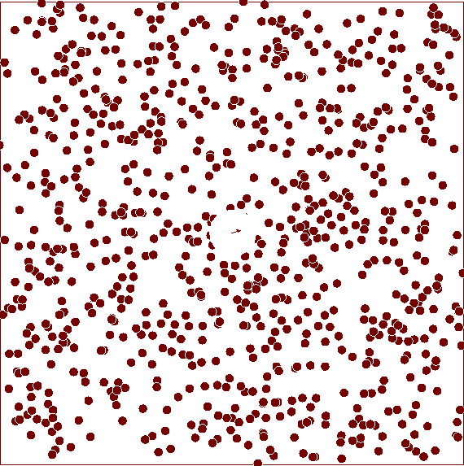

Fenomenele termice au sens doar dacă se admite că substanțele au o structură corpusculară fiind formate din particule (molecule/atomi)
Un atom este cea mai mică unitate constitutivă a materiei comune care are proprietățile unui element chimic.
Molecula e cea mai mică parte dintr-o substanță care păstrează compoziția procentuală și toate proprietățile chimice ale acelei substanțe. O moleculă este formată din cel puțin doi atomi.

AGITAȚIA TERMICĂ
Agitația termică reprezintă mișcarea permanentă, dezordonată a moleculelor oricărei substanțe, indiferent de starea ei de agregare. Această mișcare se intensifică o dată cu creșterea temperaturii.
Cantitatea de substanță este mărimea fizică fundamentală ce măsoară numărul de particule aflate într-un sistem fizic.
Molul este cantitatea de substanță dintr-un sistem care conține un număr de entități elementare egal cu numărul de atomi din 12 grame de carbon.
Masa molară reprezintă masa unui singur mol
Numărul lui Avogadro reprezintă numărul de molecule/atomi (N) dintr-un mol de substanță.
NOȚIUNI TERMODINAMICE DE BAZĂ
TERMODINAMICA
Termodinamica se ocupă cu studiul macroscopic al fenomenelor, de orice natură, în care are loc un transfer de energie sub forma de căldură și lucru mecanic.
Sistemul termodinamic este orice corp macroscopic sau ansamblu de corpuri microscopice (atomi, molecule) bine delimitat. Corpurile exterioare, care nu fac parte din sistemul termodinamic considerat, definesc mediul exterior.
SISTEM TERMODINAMIC
Starea sistemului
Starea sistemului termodinamic reprezintă totalitatea proprietăților lui la un moment dat. Ansamblul mărimilor fizice măsurabile, care caracterizează sistemul termodinamic și a relațiilor dintre acestea și sistemele înconjurătoare, constituie parametrii termodinamici ai sistemului.
STAREA DE ECHILIBRU
Starea de echilibru termodinamic este acea stare în care parametrii sistemului nu variază în timp și trebuie ca nici condițiile exterioare să nu varieze în timp.
Orice sistem termodinamic izolat ajunge după un timp într-o stare din care nu mai poate ieși de la sine.
Postulatul general al termodinamicii
Procese termodinamice
Un proces termodinamic reprezintă procesul de trecere a sistemului dintr-o stare în alta